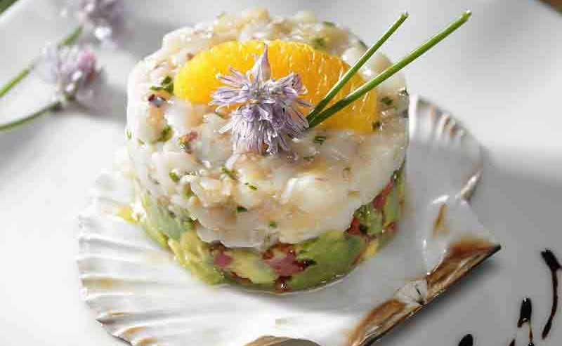
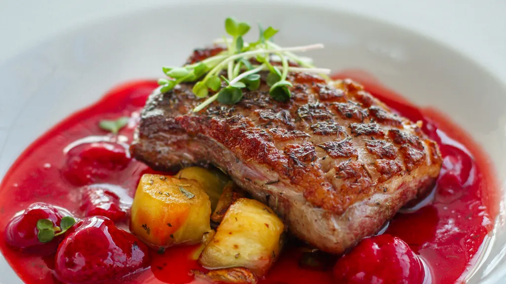
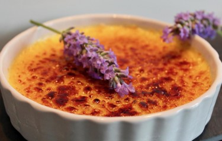

Accueil
|
Menu
|
Accès/Contact
Carte et Menu
77 Rue Boileau, 91600 Savigny-sur-Orge
01 69 96 70 59

Entrées
Tartare de Saint-Jacques
Saint-Jacques finement coupées avec une vinaigrette au citron vert, mangue et caviar.
Foie gras mi-cuit maison
Servi avec un chutney de figues et toast brioche.
Soupe de potiron à la truffe
Velouté crémeux de potiron agrémenté de lamelles de truffe noire.
Plats
Magret de canard aux cerises
Magret cuit à la perfection avec une sauce aux cerises et purée de patate douce.
Filet de bar rôti
Sur un lit de risotto au safran, sauce vierge et petits légumes glacés.
Risotto aux champignons des bois
Risotto crémeux aux champignons sauvages et parmesan.


Desserts
Tarte Tatin revisitée
Servie avec une glace à la vanille de Madagascar.
Mousse au chocolat noir et fleur de sel
Avec un croustillant praliné.
Crème brûlée à la lavande
Douceur parfumée avec une croûte de sucre caramélisé.
Cartes des boissons
Vins
Vin Rouge:
Château Margaux, Bordeaux.
Vin Blanc:
Chablis Premier Cru, Bourgogne.
Vin Rosé:
Côtes de Provence, Sainte-Victoire.
Champagnes
Brut:
Moët & Chandon Impérial.
Rosé:
Laurent-Perrier Cuvée Rosé.
Millésimé:
Dom Pérignon Vintage.
Boissons Soft
Eau minérale plate:
Evian.
Eau minérale gazeuse:
Perrier.
Soda:
Coca-Cola, Sprite, Orangina.